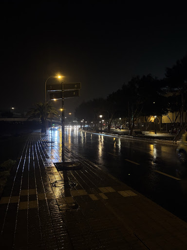

Playa Honda es una localidad costera del municipio de San Bartolomé, situada entre Arrecife y el aeropuerto. Es un lugar clave de la costa con una avenida marítima muy amplia y tranquila.
Personalmente me parece el sitio ideal para caminar al atardecer o por la noche, disfrutar del ambiente tranquilo y ver los reflejos en el paseo cuando llueve.

¿Quieres conocer los datos prácticos, accesos y detalles? Ver datos prácticos
Conoce más sobre la isla en la web de Turismo de Lanzarote.